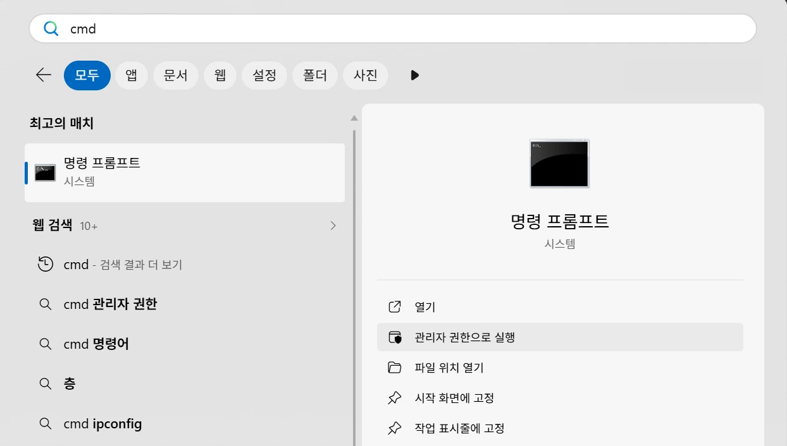

셋 중 하나만 설치하세요
이미 유료로 구독 중인 서비스가 있다면 그 회사의 도구를 고르세요. 지금 내는 구독료 안에서 바로 쓸 수 있습니다.
구독이 여러 개면 편한 것 하나, 구독이 없다면 개인 Google 계정으로 로그인하는 agy를 고르세요. 실습용 Node.js는 모두 설치합니다(STEP 2).
STEP 1명령 프롬프트(cmd)를 관리자 권한으로 열기

- 작업 표시줄 시작(⊞)을 누르고
cmd입력 - 오른쪽 관리자 권한으로 실행 클릭
- 사용자 계정 컨트롤 창에서 예
- 창 제목에 관리자: 명령 프롬프트 확인
관리자 창은 C:\Windows\System32에서 시작합니다. 아래 명령으로 내 사용자 폴더로 먼저 옮기세요.
STEP 2Node.js 설치하기 모두 공통
강의 실습에서 npm으로 설치하는 도구를 쓰기 때문에 모두 설치합니다. 이미 설치되어 있으면 아래 설치 확인만 하세요.
약관 동의를 물으면 Y 입력 후 Enter. 권한 확인 창이 뜨면 예.
- nodejs.org/ko/download 접속
- LTS 버전의 Windows 설치 파일(.msi) 받기
- 설치 파일 실행 → 계속 Next → Install
설치 확인 cmd를 새로 열고 입력
v22 이상 숫자가 나오면 정상(예: v24.20.0). npm도 숫자가 나오면 끝입니다.
STEP 3고른 도구 하나만 설치하기
내 도구의 명령을 복사 → cmd에 붙여넣기(마우스 오른쪽 클릭 또는 Ctrl+V) → Enter. 진행 표시가 없어도 끝날 때까지 기다리세요.
출처 Claude Code 설치 문서 · Codex CLI (GitHub) · Antigravity CLI 시작하기
STEP 4설치 확인 (PATH)
PATH가 뭔가요?
윈도우가 명령어를 찾아보는 폴더 목록입니다. 설치 폴더가 여기 들어 있어야 어느 폴더에서든 도구 이름만 쳐서 실행할 수 있습니다.
설치 직후엔 꼭 새 cmd 창에서 확인하세요.
새 cmd 창에서 입력
성공 아래처럼 설치 경로가 나옵니다(이름 부분은 내 계정 이름).
실패 경로 대신 "찾을 수 없다"는 안내(INFO: …)가 나오면 탭으로.
STEP 5실행하고 로그인하기
연습용 폴더를 만들고 그 안에서 내 도구를 실행합니다.
명령어를 못 찾는다고 나올 때
열려 있는 cmd 창을 모두 닫고 새로 엽니다. 설치 전에 열어 둔 창은 바뀐 PATH를 모릅니다. 대부분 이것으로 해결됩니다.
- 시작에서 환경 변수 검색 → 계정의 환경 변수 편집
검색이 어려우면 cmd에 아래 명령을 넣어도 같은 창이 열립니다. - 위쪽 사용자 변수에서 Path 선택 → 편집
- 새로 만들기 → 아래 폴더 붙여넣기
- 확인을 눌러 모두 닫고 cmd를 새로 열어 다시 확인
강의 전에 확인해 주세요
막히면 어느 STEP에서 멈췄는지와 오류 화면을 캡처해 단톡방에 올려 주세요.